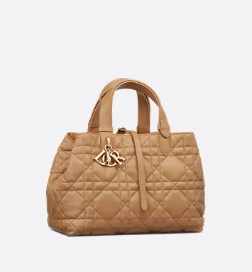
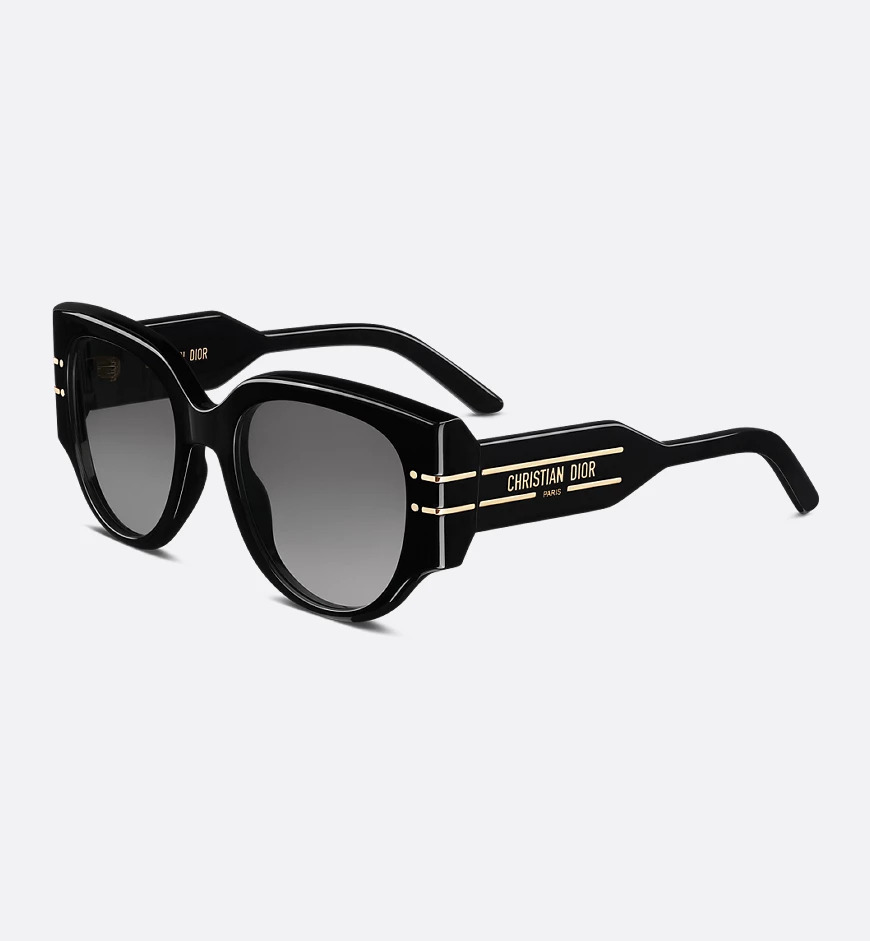

Detail pagina van de middelgrote Dior Toujours-tas
Middelgrote Dior Toujours-tas
Zwart kalfsleer met Macrocannage-motief
Referentie: M2821OSHJ_M900


Andere kleuren
Levering geschat vanaf 6 December
Omschrijving
Deze Dior Toujours-tas heeft een casual en praktisch design. Deze uitvoering van zwart kalfsleer is gedetailleerd met Macrocannage-topstiksel. De tas heeft een ruime binnenkant met een bijpassende pouch om uw essentials te ordenen. U sluit de tas in het midden met het smalle leren bandje. De D van de CD Lock-sluiting kan draaien om de zijkanten aan de passen en het silhouet van de tas te verfraaien. De leren hengsels bovenop past u aan met de kleine inkepingen, zodat deze middelgrote tas in de hand of over de schouder kan worden gedragen.
- Hoofdsamenstelling: kalfsleer
- Voering van rundsuède en kalfsleer
- Dubbele sluiting: een smal leren bandje en een Christian Dior Paris-bandje met een CD Lock-sluiting
- D.I.O.R.-bedeltjes
- Uitneembare pouch aan de binnenkant
- Verstelbare leren hengsels bovenop
- Inclusief stofzak
- Vervaardigd in Italië
Maat en pasvorm
- Afmetingen: 28,5 x 21,5 x 17 cm (lengte x hoogte x breedte)
- Deze maat is geschikt voor twee portemonnees, een mobiele telefoon, twee kaarthouders, een zonnebril en een lippenstift
- Lengte hengsel bovenop: 29-54 cm
- Draaglengte hengsel bovenop: 10-23 cm
- Gewicht: 845 g
Contact & beschikbaarheid in de winkel
- Beschikbaar in de winkel
- Maak een afspraak in de winkel
- Zoek een boutique
Heeft u vragen? Onze klantadviseurs helpen u graag verder. Neem contact met ons op via +31 (0)8000 233 964
Levering en retouren
-
Gratis ruilen en retouneren
U kunt elke bestelling, die tussen 15 november en 15 januari is geplaatst, in originele staat, retourneren of ruilen. Ongeacht of het gaat om een gepersonaliseerd item (met alle labels en patches eraan vast). Ga voor meer informatie naar onze veelgestelde vragen en antwoorden.
-
Gratis levering
Dior biedt verschillende veilige leveringsmethoden:- Standaardlevering (3-4 werkdagen): gratis
- Expreslevering (1-2 werkdagen): gratis
- Ochtendlevering (1-2 werkdagen): gratis
-
Verzending binnen 24 uur
Orders geplaatst voor 12.00 uur worden dezelfde dag voorbereid en verzonden. Orders die na 12.00 uur worden geplaatst, worden binnen 24 uur voorbereid en verzonden.

U heeft misschien ook interesse in
-
Mitzah-sjaal met Dior Oblique-motief
€210,00
-
Middlegrote Dior Book Tote
€3.000,00
-

Dio(r)evolution-ketting
€520,00
-

Vierkante sjaal met Dior Around the World-motief, (90 x 90 cm)
€490,00
Onlangs bekeken
-

-
- 